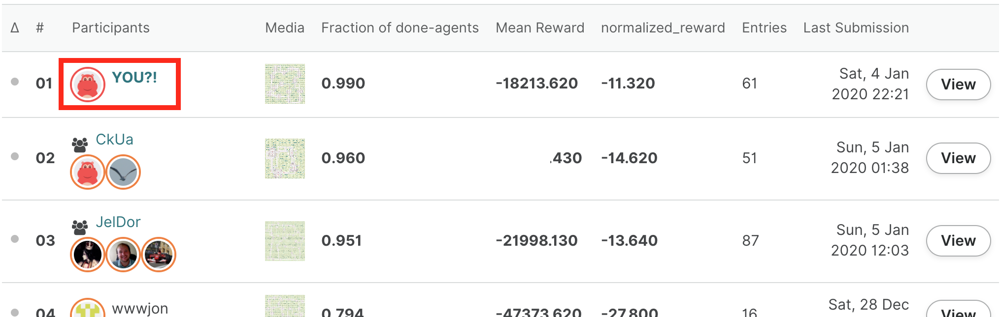
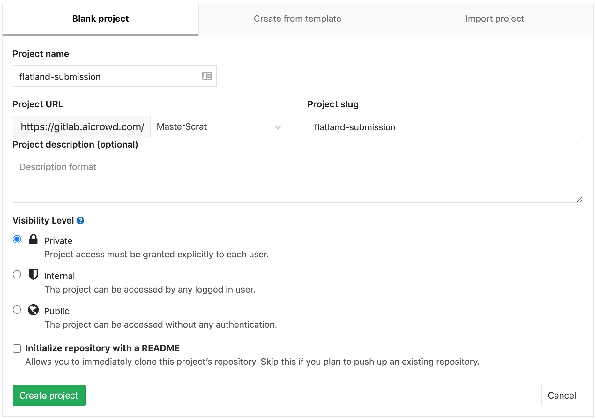
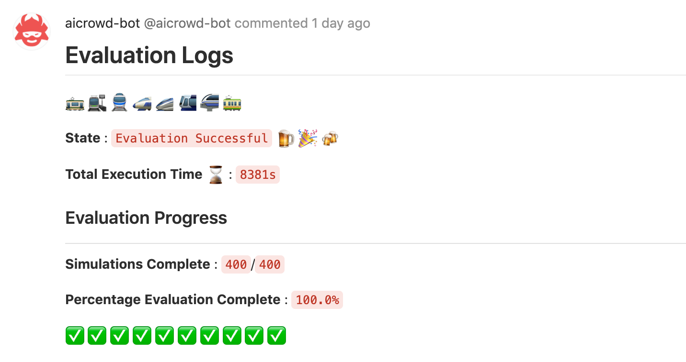

Making a Submission¶
TL;DR
This document will show you how to submit a test submission in 10 minutes.
🚂 All aboard!¶
In the next ten minutes, you will submit your first agent to the AMLD 2021 Flatland Challenge and will see your name on the leaderboard.

If you have any problem along the way, take a look at the troubleshooting tips at the end of this page. If things still don’t go your way, don’t hesitate to ask about it in the forum.
📦 Setup¶
Register¶
Sign up on AIcrowd and Click on Participate on the challenge page at : https://www.aicrowd.com/challenges/flatland
Starter Kit¶
Start by cloning the starter kit:
$ git clone https://gitlab.aicrowd.com/flatland/flatland-starter-kit.git/
$ cd flatland-starter-kit
The starter kit is a full baseline you can directly submit to the competition! We will talk more about it in the last section: how it works, how to train it, and how you could extend it.
For now we’ll just submit it as is to see how the process works.
Create the conda environment¶
The start kit uses the conda package manager. Install it if it is not setup on your machine.
You can now run the following:
$ conda env create -f environment.yml # creates the flatland-rl environment
$ conda activate flatland-rl # activates it
$ pip install -U flatland-rl
Note
Flatland is tested with Python 3.6 and 3.7 on modern versions of macOS and Linux. We are unable to support Windows at this time. WSL is known to work but you may encounter problems with graphical rendering. Your contribution is welcome if you can help with this!
✅ Test your local setup¶
We will now run the agent locally to check that it works as expected.
Let’s download the test environments. Head to the challenge resources and download the provided test set. Untar them in ./scratch/test-envs.
Your directory structure should be as follow:
./scratch
└── test-envs
├── metadata.csv
├── Test_0
│ ├── Level_0.pkl
│ └── Level_1.pkl
├── Test_1
│ ├── Level_0.pkl
│ └── Level_1.pkl
├── Test_2
│ ├── Level_0.pkl
│ └── Level_1.pkl
├── Test_3
│ ├── Level_0.pkl
│ └── Level_1.pkl
├── ...
We will now replicate the setup used on AIcrowd on your local machine to ensure that your submission will be evaluated without problem when you submit it. This involves three components: your agent, the evaluator service, and a Redis server to let them communicate.
Redis¶
The communication between your agent and the evaluator is done through a Redis server. You should ensure that a redis server is running on localhost. Follow these instructions to set it up.
You can check that things are ready by running:
$ redis-cli ping
PONG
Evaluator service¶
Let’s start the evaluator service. You should use different terminals for the evaluator and the agent as they will need to run at the same time.
$ flatland-evaluator --tests ./scratch/test-envs/ --shuffle False
The agent¶
You can now start the agent in a new terminal:
$ conda activate flatland-rl # environment needs to be activated in each new tab
$ export AICROWD_TESTS_FOLDER=./scratch/test-envs/
$ python run.py
The agent should now start interacting with the evaluator, and you should see the results coming in:
$ flatland-evaluator --tests ./scratch/test-envs/ --shuffle False
['Test_12/Level_0.pkl', 'Test_1/Level_1.pkl', 'Test_10/Level_1.pkl', 'Test_11/Level_0.pkl', 'Test_8/Level_0.pkl', 'Test_4/Level_1.pkl', 'Test_2/Level_1.pkl', 'Test_5/Level_0.pkl', 'Test_7/Level_0.pkl', 'Test_6/Level_1.pkl', 'Test_3/Level_1.pkl', 'Test_7/Level_1.pkl', 'Test_9/Level_1.pkl', 'Test_10/Level_0.pkl', 'Test_6/Level_0.pkl', 'Test_2/Level_0.pkl', 'Test_11/Level_1.pkl', 'Test_0/Level_1.pkl', 'Test_0/Level_0.pkl', 'Test_9/Level_0.pkl', 'Test_4/Level_0.pkl', 'Test_13/Level_0.pkl', 'Test_12/Level_1.pkl', 'Test_8/Level_1.pkl', 'Test_3/Level_0.pkl', 'Test_5/Level_1.pkl', 'Test_13/Level_1.pkl', 'Test_1/Level_0.pkl']
Listening at : flatland-rl::FLATLAND_RL_SERVICE_ID::commands
Evaluating : Test_12/Level_0.pkl
Evaluating : Test_1/Level_1.pkl
Evaluating : Test_10/Level_1.pkl
Evaluating : Test_11/Level_0.pkl
Evaluating : Test_8/Level_0.pkl
Evaluating : Test_4/Level_1.pkl
...
You don’t need to let the evaluation run until the end. The goal is simply to check that everything works as expected.
After extending this baseline, this process will allow you to check that your solution is fully working.
🗂️ Code structure¶
There are two files that need to be present in your repository for the evaluation to work as intended: aicrowd.json to indicate which challenge you are taking part in, and run.sh which serves as the entrypoint of your solution.
aicrowd.json¶
Each repository must have an aicrowd.json file with the following content:
{
"challenge_id": "neurips-2020-flatland-challenge",
"grader_id": "neurips-2020-flatland-challenge",
"tags": ["RL"],
"debug": true
}
This is used to map your submission to the proper challenge. The starter kit repository includes a sample aicrowd.json file with the correct values.
You need to ensure that you set the proper tags with each submission. The tags indicate the methods you use in that submission, and need to be at least one of:
"RL"if you used reinforcement learning,"OR"if you used operations research,"other"if you used another method.
Careful, these tags are case sensitive! You can combine multiple tags, for example if you combine an OR method for long-term planning with an RL method to handle short-term rescheduling, you should indicate: "tags": ["RL", "OR"].
Warning
Different prizes are available depending on the method you use! Therefore it is important to fill this tag correctly. Winning solutions will be verified by the organizers to ensure the method was properly declared.
If you set debug to true, then the evaluation will run for a shorter time, and the logs from your submitted code will be made available to you to help you debug. These test submissions will appear at the bottom of the leaderboard (score of -1.0).
Warning
By default debug is set to true, so when you are ready to make a competitive submission, make sure to set debug to false!
run.sh¶
The starter kit repository includes a sample run.sh file that you don’t need to change. The default run.sh file calls the run.py file, which is where you would usually implement your solution.
📤 Submitting!¶
To submit to the challenge, you will use git tags. You are allowed to submit up to 10 debug submissions and 5 non-debug submissions per day (rolling window of 24h).
Create your repository¶
Head to gitlab.aicrowd.com/projects/new to create your private repository. You can use any name you want for it.

Push a tag¶
You first need to add an SSH key to your GitLab account by following these instructions (replacing references of gitlab.com with gitlab.aicrowd.com). If you do not have SSH Keys, you will first need to generate a pair.
You can then create a submission by pushing a tag to your repository.
First add a git remote pointing to your newly created repository:
$ # change the line below to use your AIcrowd username and repository name:
$ git remote add aicrowd git@gitlab.aicrowd.com:<YOUR_AICROWD_USER_NAME>/<YOUR_REPO_NAME>.git
Finally submit your solution by creating a tag for your submission and pushing it:
$ git tag submission-v0.1 # needs a new tag name for each submission!
$ git push aicrowd master
$ git push aicrowd submission-v0.1
Note that if the content of your repository does not change, then pushing a new tag will not trigger a new evaluation.
You should now be able to see the details of your submission at:
https://gitlab.aicrowd.com/<YOUR_AICROWD_USER_NAME>/<YOUR_REPO_NAME>/issues
You should start seeing something like this at the address above:

Be patient, the evaluation will take some time! 🕙
🚉 Next stops¶
The starter kit contains 2 example policies to get started with this challenge:
a simple single-agent DQN method
a more robust multi-agent DQN method that you can submit out of the box to the challenge 🚀
🔗 Train the single-agent DQN policy
🔗 Train the multi-agent DQN policy
The single-agent example is meant as a minimal example of how to use DQN. The multi-agent is a better starting point to create your own solution.
You can fully train the multi-agent policy in Colab for free! 
To go further, explore the research baselines which use RLlib to train using advanced algorithms such as Ape-X, PPO or imitation learning methods such as DQfD.
🐛 Troubleshooting¶
“env_client.step() called before env_client.env_create() call”¶
This occurs if a previous local evaluation was interrupted. The client communicates with the evaluator service through Redis, and sometimes data in Redis can be left in an intermediate state that prevents a new evaluation from starting.
Warning
The commands that follow will delete all the data in your Redis database. Don’t run them if you use this Redis database for other purposes!
To solve this problem, run the following commands:
$ redis-cli
127.0.0.1:6379> FLUSHALL
If you often interrupt submissions, you can systematically cleanup the Redis database before starting the evaluator:
redis-cli -c "flushall"; flatland-evaluator --tests ./scratch/test-envs/ --shuffle False
“unknown locale: UTF-8”¶
This happens on macOS. Append this to your ~/.bash_profile:
$ export LC_ALL=en_US.UTF-8
$ export LANG=en_US.UTF-8
And then run:
$ source ~/.bash_profile
“activate is not a conda command”¶
This error can have various causes. Most commonly, this means that your conda installation is either too old, or misconfigured in some way. The easiest fix is to update conda to the latest version and re-install it if it keeps failing.